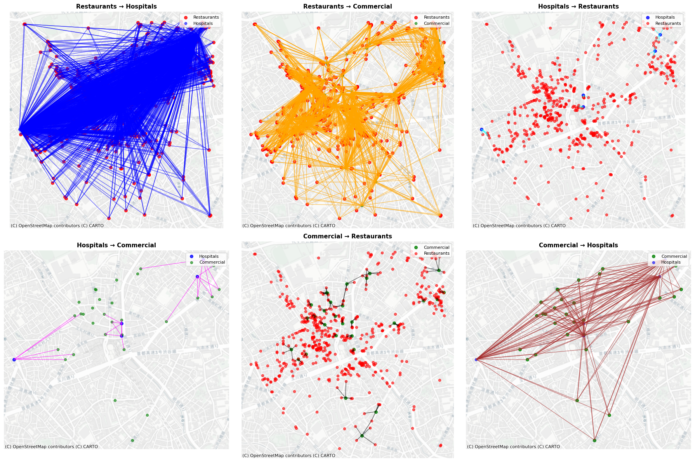

City2Graph¶

City2Graph is a Python library for converting geospatial datasets into graphs for GNN with integrated interface of GeoPandas, NetworkX, and Pytorch Geometric across multiple domains (e.g. streets, transportations, OD matrices, POI proximities, etc.). It enables researchers and practitioners to seamlessly develop advanced GeoAI and geographic data science applications.

Features¶
- Construct graphs from morphological datasets (e.g. buildings, streets, and land use from OpenStreetMap (OSM), Overture Maps, and others)
- Construct graphs from transportation datasets (e.g. public transport of buses, trams, and trains from GTFS)
- Construct graphs from contiguity datasets (e.g. land use, land cover, and administrative boundaries)
- Construct graphs from mobility datasets (e.g. bike-sharing, migration, and pedestrian flows)
- Convert geospatial data (GeoPandas / NetworkX) into tensors (PyTorch Geometric's Data and HeteroData) for graph representation learning, such as Graph Neural Networks (GNNs)
City2Graph empowers researchers and practitioners in GeoAI, Urban Analytics, and Spatial Data Science to build advanced applications. A key distinction of this library is its ability to model complex urban systems by handling multiple geospatial relations as heterogeneous graphs. It bridges the gap between traditional GIS and modern Graph Neural Networks (GNNs) for a variety of applications. By supporting standard libraries like PyTorch Geometric, it enables seamless integration into deep learning workflows for Graph Representation Learning. With its versatile graph construction interface, this library can also be used for network analysis of urban systems from multiple geospatial relations, such as multi-modal accessibility (e.g. isochrone with street networks + public transport networks).


Quickstart¶
Install City2Graph using pip (recommended):
For graph neural network functionality (PyTorch, PyTorch Geometric):
Supported CUDA options: cu118, cu124, cu126, cu128, cu130
Or install with conda (core functionality only):
To add PyTorch and PyTorch Geometric (conda):
For CUDA-enabled PyTorch (conda):
Warning
As conda is not officially supported by PyTorch and PyTorch Geometric anymore, pip is recommended for full PyTorch support. See Installation for details.
Examples¶
Graph
# Define metapath: amenity -> segment -> segment -> amenity (3-hop in this case)
metapaths = [[("amenity", "is_nearby", "segment"),
("segment", "connects", "segment"),
("segment", "connects", "segment"),
("segment", "is_nearby", "amenity")]]
# Add metapath-derived edges to connect amenities through street networks
nodes_with_metapaths, edges_with_metapaths = c2g.add_metapaths(
(combined_nodes, combined_edges),
metapaths,
edge_attr="distance_m",
edge_attr_agg="sum"
)

For details, see Examples
Morphology
morphological_nodes, morphological_edges = c2g.morphological_graph(
buildings_gdf,
segments_gdf,
center_point,
distance=500
)

For details, see Examples
Transportation
sample_gtfs_path = Path("./itm_london_gtfs.zip")
gtfs_data = c2g.load_gtfs(sample_gtfs_path)
travel_summary_nodes, travel_summary_edges = c2g.travel_summary_graph(
gtfs_data, calendar_start="20250601", calendar_end="20250601")

For details, see Examples
Mobility
# Load zones (e.g., MSOA boundaries) and OD matrix data
od_data = pd.read_csv("od_matrix.csv")
zones_gdf = gpd.read_file("zones.gpkg")
# Convert OD matrix to graph
od_nodes, od_edges = c2g.od_matrix_to_graph(
od_data,
zones_gdf,
source_col="origin",
target_col="destination",
weight_cols=["flow"],
zone_id_col="zone_id",
directed=False
)

For details, see Examples
Proximity
wax_l1_nodes, wax_l1_edges = c2g.waxman_graph(poi_gdf,
distance_metric="manhattan",
r0=100,
beta=0.5)
wax_l2_nodes, wax_l2_edges = c2g.waxman_graph(poi_gdf,
distance_metric="euclidean",
r0=100,
beta=0.5)
wax_net_nodes, wax_net_edges = c2g.waxman_graph(poi_gdf,
distance_metric="network",
r0=100,
beta=0.5,
network_gdf=segments_gdf.to_crs(epsg=6677))

nodes_dict = {
"restaurants": poi_gdf,
"hospitals": hospital_gdf,
"commercial": commercial_gdf
}
# Generate proximity edges between layers using KNN method
proximity_nodes, proximity_edges = c2g.bridge_nodes(
nodes_dict,
proximity_method="knn",
k=5,
distance_metric="euclidean"
)

# Build a contiguity graph (Queen or Rook) from polygonal zones
wn_q_nodes, wn_q_edges = c2g.contiguity_graph(
wards_gdf,
contiguity="queen", # or "rook"
distance_metric="euclidean" # or "manhattan", "network"
)
# Link point features (e.g., POIs, stops) to containing polygons (e.g., wards)
nodes_dict, edges_dict = c2g.group_nodes(
polygons_gdf=wards_gdf,
points_gdf=poi_gdf,
predicate="covered_by" # include boundary points; alternatives: "within", "contains"
)
# Combine contiguity edges and grouped edges into a single heterogeneous graph
combined_nodes = {
"wards": wn_q_nodes,
"poi": nodes_dict["poi"]
}
combined_edges = {
("wards", "is_contiguous_with", "wards"): wn_q_edges[("wards", "is_contiguous_with", "wards")],
("wards", "covers", "poi"): edges_dict[("wards", "covers", "poi")]
}
# Convert to PyG HeteroData
hetero_graph = c2g.gdf_to_pyg(combined_nodes, combined_edges)

For details, see Examples
Citation¶
If you use City2Graph in your research, please cite it as follows:
@software{sato2025city2graph,
title = {City2Graph: Transform geospatial relations into graphs for spatial network analysis and Graph Neural Networks},
author = {Sato, Yuta},
year = {2025},
url = {https://github.com/c2g-dev/city2graph},
doi = {10.5281/zenodo.15858845},
}
You can also find the citation information in the CITATION.cff file in the repository, which follows the Citation File Format standard.
Documentation¶